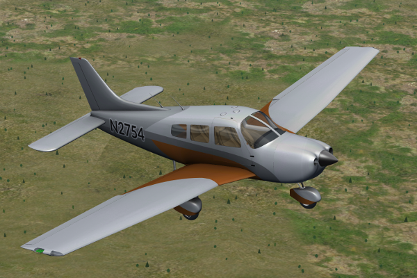
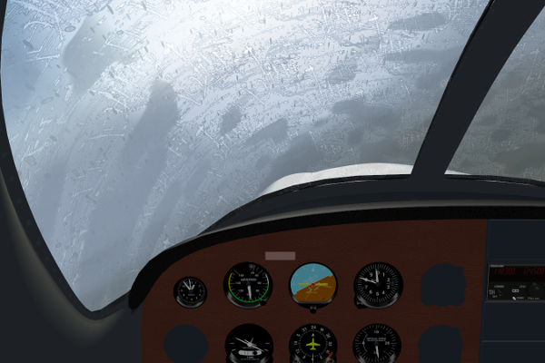

The exterior model features fully animated flight control surfaces and landing gear with struts and scissors.
Currently featured in the exterior model:
- Ailerons, elevator, and rudder
- Elevator trim tab
- Landing gear suspension
- Flaps and flap arm
- Propeller with blur
Note that at this time, the exterior texture is provisional; the tail number and the livery cannot be changed.
The Piper Archer has been tested extensively with Rembrandt and atmospheric light scattering; the aircraft should work well with either one enabled. All of the lights will dim when the electrical system is under load, such as when the starter is cranking the engine.
The following lights fully support Rembrandt lighting:
- Cockpit lighting
- Landing lights
- Navigation lights
- Strobe lights
- Tail beacon light

The Piper Archer features detailed and accurate fuel and electrical systems.
The electrical system simulation currently features:
- Battery charging
- Voltage drop under load
- Switches for all powered components
The fuel system currently features:
- Fuel pump with collection tank
The fictional Piper Archer CX, unlike the existing TX and LX variants, has analog instruments (such as in the Piper Archer II) instead of a glass panel. Each instrument is modeled to fit the instrument panel and should mimic its real-life counterpart as closely as possible.
The following instruments are present:
- Flight instruments (six pack)
- Oil temperature / oil pressure
- Battery voltage
- Fuel level / fuel pressure
- Tachometer
In addition to the above instruments, many switches and controls are present as well.

FlightGear's effects offer a high degree of realism, but only if they're used by aircraft. The Piper Archer series showcases many effects possible in later versions of FlightGear.
The following effects have been implemented:
- Frost and rain on windshield
- Fake shadows (in progress)
- Advanced fuselage shading with reflections and normal map (in progress)
As FlightGear's effects improve, the Piper Archer's effects will be updated as well.

- Download the latest version of this aircraft
- Unzip the aircraft; there should be a single folder:
piper-archer/inside - Copy
piper-archerto$FG_ROOT/Aircraft/piper-archer/.
If you know how to use Git, it's highly recommended
to clone the repository and use it directly:
git clone http://github.com/zlsa/piper-archer-cx.git
and pull once a day or so. master will
occasionally have graphical problems or minor bugs but
should always fly.
If you use the zip downloaded here, be aware that this aircraft is updated almost daily* and you will have to remove the aircraft, download the zip, and unpack it whenever you want the newer changes.
Previous releases are not guaranteed to work in any way; use at your own risk. Older versions and newer version are not compatible. This aircraft has been tested with FlightGear version 3.5 (git) and should work with 3.2 and 3.4 as well.
-
20150311 - Added frost and rain effect.
- The livery is now the real one.
- Two versions of prop spinner for fast and slow modes.
- Improved propeller blade model.
- Improved FDM; flap drag is more linear.